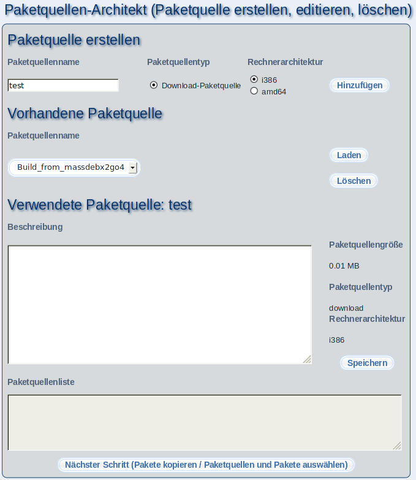

Der Paketquellen-Architekt erlaubt Ihnen, Softwarepakete von verschiedenen Medien (CD, DVD, Internet) auf den m23-Server zu kopieren und diese in eine Paketquelle umzuwandeln. Diese Paketquelle kann dann dazu benutzt werden, um Clients zu installieren. So ist es möglich, ohne Internetverbindung Clients zu installieren. Auch kann es wünschenswert sein, eigene Pakete in einer Paketquelle abzulegen.
- Neue Paketquelle erstellen: Sie erstellen eine neue Paketquelle, indem Sie einen Namen bei ''Paketquellenname'' angeben, den Paketquellentyp auswählen und anschließend auf ''Hinzufügen'' klicken.
- Paketquelle löschen oder laden: Wählen Sie aus der Liste unter ''Vorhandene Paketquelle'' die Paketquelle aus, die Sie löschen oder laden möchten und klicken Sie danach auf die gewünschte Aktion.
- Verwendete Paketquelle: In diesem Abschnitt werden vorhandene Informationen zu der gewählten Paketquelle angezeigt.
- Beschreibung oder Typ ändern: Sie können zusätzlich eine Beschreibung für die Paketquelle vergeben oder den Paketquellentyp ändern. Klicken Sie anschließend auf ''Speichern''.
- Paketquellenliste: Hier wird die Paketquellenliste gezeigt, die der Paketquelle entspricht. Wollen Sie einen Client aus dieser Paketquelle installieren, dann kopieren Sie die angegebenen Zeilen und fügen Sie diese zu der Paketquellenliste des Clients hinzu.
- Nächster Schritt: Klicken Sie anschließend auf den Button, um mit dem Kopieren der Pakete oder der Auswahl der Paketquellen und Pakete fortzufahren.
Unterabschnitte
root
2017-01-05